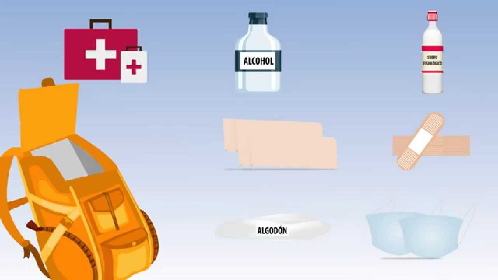

EN EL CASO DE ERUPCIÓN
Croquis para llegar al punto "MARCONI"
RECOMENDACIONES EN CASO DE CAÍDA DE CENIZA VOLCÁNICA
• No humedecer la ceniza a fin de evitar taponamientos en el sistema de alcantarillado
• Mantén la calma.
• Utiliza medios electrónicos y de comunicación para obtener información confiable que den las autoridades de Protección Civil sobre la caída de ceniza y atiende siempre sus instrucciones.
• No realices actividades al aire libre y si es posible no salgas.
• Cierra puertas y ventanas y coloca toallas o trapos húmedos en las rendijas.
• Si tienes que salir cúbrete con un pañuelo o tapabocas, limpia ojos y garganta con agua pura.
• Para los ojos, usa lentes protectores, especialmente si usas lentes de contacto.
• Ten a la mano una linterna y pilas.
• La ceniza volcánica puede ser resbaladiza, sobre todo cuando está mojada. Toma las precauciones necesarias.
• Cubre tinacos, cisternas y depósitos de agua.
• Barre y retira la ceniza de techos, azoteas, patios y calles, deposítalas en bolsas y no permitas que se vaya al drenaje.
• Si es posible no conduzcas, si tienes que hacerlo, hazlo a baja velocidad y con las luces encendidas, ya que la ceniza dificulta la visibilidad y provoca que el pavimento se vuelva resbaloso.
• Ante la caída de ceniza volcánica evita consumir alimentos en la vía pública.
• Si permaneces expuesto por algún tiempo a las cenizas volcánicas, al ingresar a tu casa se recomienda cambiar de ropa.
• Durante la caída de ceniza volcánica, evita que los menores realicen actividades al aire libre.
• Mantén a tus mascotas en un lugar techado al igual que sus alimentos. Si tus macotas salen, cepíllalos antes de permitirles la entrada nuevamente.
• La ceniza puede ser usada para parques, jardines, macetas o tierras de cultivo, ya que es rica en minerales.
• No repitas ni difundas rumores. La ciudad de Puebla se encuentra a una distancia segura, no intentes salir.
• Usa las vías de comunicación solo en caso de ser necesario.
RECOMENDACIONES EN CASO DE UNA ERUPCIÓN

Aplicación 3
Volcán Popocatépetl
DLPL


{kind=link}